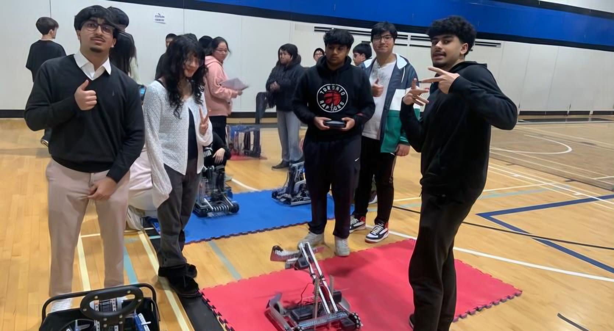
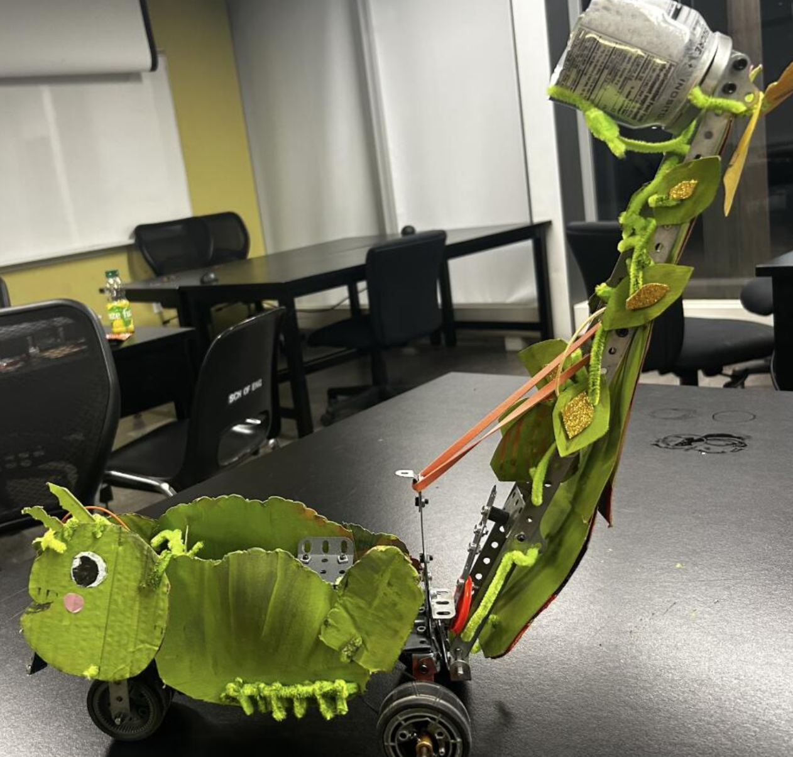
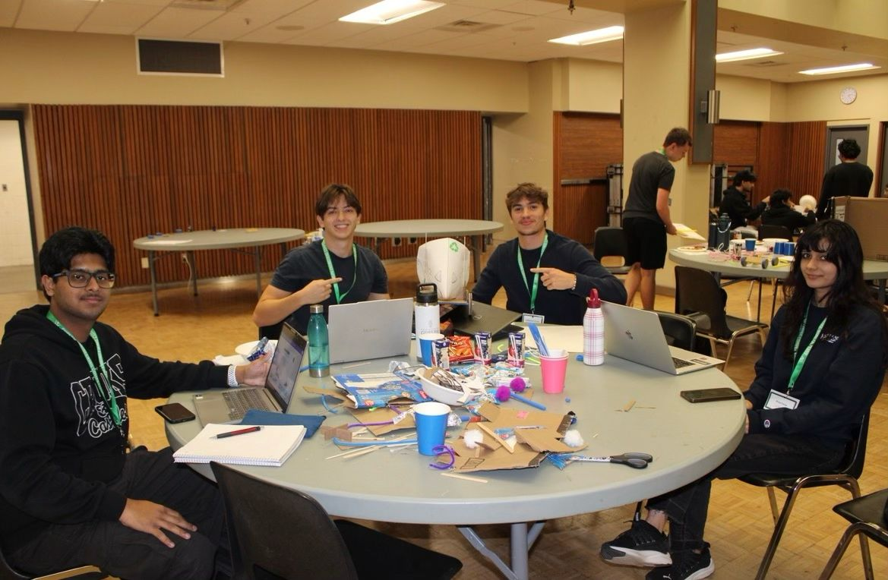
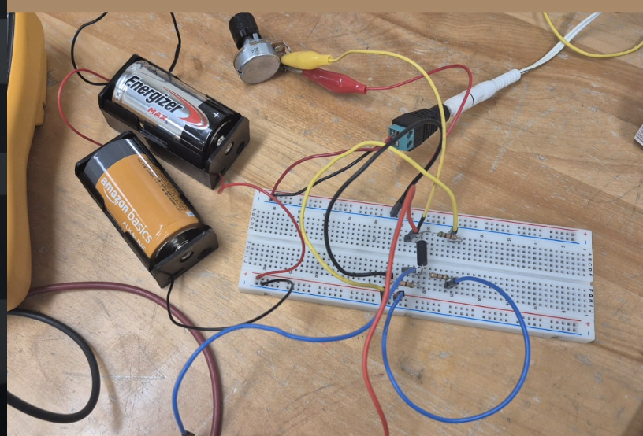

Why I Chose Engineering
Why this field
I got into engineering because I love turning an idea into something that actually works, and because those things can solve real problems for real people.For me, a project isn't done when it looks right. It's done when the wheelchair turns, when the car rolls across the floor in the wind, or when the game reacts to your hand in front of a webcam. That moment is why I keep building.
I also love the variety. One project is motor drivers and a battery pack on an Arduino. The next is bookings and waitlists in Java. Then it's a webcam game that has to keep up with moving hands. I'm not ready to pick just one, because moving between hardware and software is where I think best.
Who it's for
I'm a woman and a minority in a field that doesn't look much like me yet. I used to think of that as something to push past. Now I think of it as part of why I do this.
It shapes how I build. I want things to work for everyone from the start, not have inclusion added at the end.
It also matters who gets to see the work. When a girl sees someone like her designing and building hardware, her question changes. It stops being "do I belong in STEM?" and becomes "what do I want to build?" I want to help make that the normal question.



